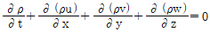
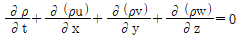
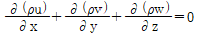
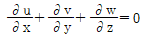
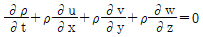
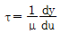
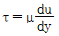
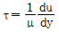
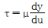
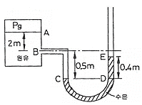

가스기사 (2015-03-08 기출문제)
1과목: 가스유체역학
1. 37℃, 200kPa 상태의 N2의 밀도는 약 몇 ㎏/m3인가? (단, N의 원자량은 14이다.)
- 0.24
- 0.45
- 1.12
- 2.17
(정답률: 60%)
2. 직각좌표계에 적용되는 가장 일반적인 연속방정식은

으로 주어진다. 다음 중 정상상태(steady state)의 유동에 적용되는 연속방정식은?



(정답률: 67%)

3. 1차원 흐름에서 수직충격파가 발생하면 어떻게 되는가?
- 속도, 압력, 밀도가 증가
- 압력, 밀도, 온도가 증가
- 속도, 온도, 밀도가 증가
- 압력, 밀도, 속도가 감소
(정답률: 84%)
4. 안지름 20㎝의 원관 속을 비중이 0.83인 유체가 층류(Laminar flow)로 흐를 때 관중심에서의 유속이 48㎝/s이라면 관벽에서 7㎝ 떨어진 지점에서의 유체의 속도(㎝/s)는?
- 25.52
- 34.68
- 43.68
- 46.92
(정답률: 49%)
5. 유체가 흐르는 배관 내에서 갑자기 밸브를 닫았더니 급격한 압력변화가 일어났다. 이때 발생할 수 있는 현상은?
- 공동현상
- 서어징 현상
- 워터해머 현상
- 숏피닝 현상
(정답률: 80%)
6. 단단한 탱크 속에 2.94kPa, 5℃의 이상기체가 들어있다. 이것을 110℃까지 가열하였을 때 압력은 몇 kPa 상승하는가?
- 4.⑤
- 3.⑤
- 2.54
- 1.11
(정답률: 34%)
7. 밀도 1g/cm3인 액체가 들어 있는 개방탱크의 수면에서 1m아래의 절대 압력은 약 몇 ㎏f/cm2인가? (단, 이때 대기압은 1.033㎏f/cm2이다.)
- 1.113
- 1.52
- 2.033
- 2.52
(정답률: 52%)
8. 2차원 직각좌표계(x, y)상에서 속도 포텐셜(ø, velocity potential)이 ø＝Ux로 주어지는 유동장이 있다. 이 유동장의 흐름함수(Ѱ, stream function)에 대한 표현식으로 옳은 것은? (단, U는 상수이다.)
- U(x＋y)
- U(-x＋y)
- Uy
- 2Ux
(정답률: 80%)
9. 기준면으로부터 10m인 곳에 5m/s로 물이 흐르고 있다. 이때 압력을 재어보니 0.6㎏f/cm2이었다. 전수두는 약 몇 m가 되는가?
- 6.28
- 10.46
- 15.48
- 17.28
(정답률: 47%)
10. 베르누이 방정식을 실제 유체에 적용할 때 보정해 주기 위해 도입하는 항이 아닌 것은?
- Wp(펌프일)
- Hf(마찰손실)
- △P(압력차)
- ɳ(펌프효율)
(정답률: 68%)
11. 기체수송에 사용되는 기계들이 줄 수 있는 압력차를 크기순서로 옳게 나타낸 것은?
- 팬(fan)＜압축기＜송풍기(blower)
- 송풍기(blower)＜팬(fan)＜압축기
- 팬(fan)＜송풍기(blower)＜압축기
- 송풍기(blower)＜압축기＜팬(fan)
(정답률: 81%)
12. 뉴턴의 점성법칙을 옳게 나타낸 것은? (단, 전단응력은 τ, 유체속도는 u, 점성계수는 μ, 벽면으로부터의 거리는 y로 나타낸다.)




(정답률: 79%)
13. 내경이 5㎝인 파이프 속에 유속이 3m/s이고 동점성계수가 2stokes인 용액이 흐를 때 레이놀즈수는?
- 333
- 750
- 1000
- 3000
(정답률: 79%)
14. 펌프의 종류를 옳게 나타낸 것은?
- 원심펌프 : 벌류트펌프, 베인펌프
- 왕복펌프 : 피스톤펌프, 플런저펌프
- 회전펌프 : 터빈펌프, 제트펌프
- 특수펌프 : 벌류트펌프, 터빈펌프
(정답률: 73%)
15. 비점성 유체에 대한 설명으로 옳은 것은?
- 유체유동 시 마찰저항이 존재하는 유체이다.
- 실제유체를 뜻한다.
- 유체유동 시 마찰저항이 유발되지 않는 유체를 뜻한다.
- 전단응력이 존재하는 유체흐름을 뜻한다.
(정답률: 80%)
16. U자 Manometer에 수은(비중 13.6)과 물(비중1)이 채워져 있고 압력계 읽음이 R＝32.7㎝일 때 양쪽 단에서 같은 높이에 있는 물 내부 두 점에서의 압력차는? (단, 물의 밀도는 1000㎏/m3이다.)
- 40400㎏f/cm2
- 40.4㎏f/cm2
- 40.4 N/m2
- 40400 N/m2
(정답률: 51%)
17. 물이 내경 2㎝인 원형관을 평균 유속 5㎝/s로 흐르고 있다. 같은 유량이 내경 1㎝인 관을 흐르면 평균 유속은?
- 1/2 만큼 감소
- 2배로 증가
- 4배로 증가
- 변함없다.
(정답률: 75%)
18. 관속의 난류흐름에서 관 마찰계수 f는?
- 레이놀즈수에만 관계없고 상대조도만의 함수이다.
- 레이놀즈수만의 함수이다.
- 레이놀즈수와 상대조도의 함수이다.
- 프루우즈수와 마하수의 함수이다.
(정답률: 75%)
19. 지름이 0.1m인 관에 유체가 흐르고 있다. 임계레이놀즈수가 2100이고, 이에 대응하는 임계유속이 0.25 m/s이다. 이 유체의 동점성 계수는 약 몇 cm2인가?
- 0.095
- 0.119
- 0.354
- 0.454
(정답률: 75%)
20. 단면적 0.5m2의 원관 내를 유량 2m3/s, 압력 2㎏f/cm2로 물이 흐르고 있다. 이 유체의 전수두는? (단, 위치수두는 무시하고 물의 비중량은 1000㎏f/m3이다.)
- 18.8m
- 20.8m
- 22.4m
- 24.4m
(정답률: 60%)
2과목: 연소공학
21. 최대안전틈새의 범위가 가장 적은 가연성가스의 폭발 등급은?
- A
- B
- C
- D
(정답률: 71%)
22. 벤젠(C6H6)에 대한 최소산소농도(MOC, vol%)를 추산하면? (단, 벤젠의 LFL[연소하한계]는 1.3[vol%]이다.)
- 7.58
- 8.55
- 9.75
- 10.46
(정답률: 46%)
23. 층류연소속도에 대한 설명으로 가장 거리가 먼 것은?
- 층류연소속도는 혼합기체의 압력에 따라 결정된다.
- 층류연소속도는 표면적에 따라 결정된다.
- 층류연소속도는 연료의 종류에 따라 결정된다.
- 층류연소속도는 혼합기체의 조성에 따라 결정된다.
(정답률: 56%)
24. 산소의 성질, 취급 등에 대한 설명으로 틀린 것은?
- 임계압력이 25MPa이다.
- 산화력이 아주 크다.
- 고압에서 유기물과 접촉시키면 위험하다.
- 공기액화분리기 내에 아세틸렌이나 탄화수소가 축적되면 방출 시켜야 한다.
(정답률: 73%)
25. 내부에너지의 정의는 어느 것인가?
- (총에너지)-(위치에너지)-(운동에너지)
- (총에너지)-(열에너지)-(운동에너지)
- (총에너지)-(열에너지)-(위치에너지)-(운동에너지)
- (총에너지)-(열에너지)-(위치에너지)
(정답률: 66%)
26. 디젤 사이클의 작동 순서로 옳은 것은?
- 단열압축 → 정압가열 → 단열팽창 → 정적방열
- 단열압축 → 정압가열 → 단열팽창 → 정압방열
- 단열압축 → 정적가열 → 단열팽창 → 정적방열
- 단열압축 → 정적가열 → 단열팽창 → 정압방열
(정답률: 59%)
27. 화염의 안정범위가 넓고 조작이 용이하며 역화의 위험이 없으며 연소실의 부하가 적은 특징을 가지는 연소 형태는?
- 분무연소
- 확산연소
- 분해연소
- 예혼합연소
(정답률: 65%)
28. 액체연료를 미세한 기름방울로 잘게 부수어 단위 질량당의 표면적을 증가시키고 기름방울을 분산, 주위 공기와의 혼합을 적당히 하는 것을 미립화라 한다. 다음 중 원판, 컵 등의 외주에서 원심력에 의해 액체를 분산시키는 방법에 의해 미립화하는 무기는?
- 회전체 분무기
- 충돌식 분무기
- 초음파 분무기
- 정전식 분무기
(정답률: 85%)
29. 가연성 가스의 폭발범위에 대한 설명으로 옳지 않은 것은?
- 일반적으로 압력이 높을수록 폭발범위는 넓어진다.
- 가연성 혼합가스의 폭발범위는 고압에서는 상압에 비해 훨씬 넓어진다.
- 프로판과 공기의 혼합가스에 불연성 가스를 첨가하는 경우 폭발범위는 넓어진다.
- 수소와 공기의 혼합가스는 고온에 있어서는 폭발범위가 상온에 비해 훨씬 넓어진다.
(정답률: 85%)
30. 연소온도를 높이는 방법으로 가장 거리가 먼 것은?
- 연료 또는 공기를 예열한다.
- 발열량이 높은 연료를 사용한다.
- 연소용 공기의 산소농도를 높인다.
- 복사전열을 줄이기 위해 연소속도를 늦춘다.
(정답률: 81%)
31. 다음 중 액체 연료의 연소 형태가 아닌 것은?
- 등심연소(wick combustion)
- 증발연소(vaporizing combustion)
- 분무연소(spray combustion)
- 확산연소(diffusive combustion)
(정답률: 76%)
32. 0.3g의 이상기체가 750㎜Hg, 25℃에서 차지하는 용적이 300mL이다. 이 기체 10g 이 101.325kPa에서 1L가 되려면 온도는 약 몇℃가 되어야 하는가?
- -243℃
- -30℃
- 30℃
- 298℃
(정답률: 51%)
33. 실내화재 시 연소열에 의해 천정류(Ceiling Jet)의 온도가 상승하여 600℃ 정도가 되면 천정류에서 방출되는 복사열에 의하여 실내에 있는 모든 가연물질이 분해되어 가연성 증기를 발생하게 됨으로써 실재 전체가 연소하게 되는 상태를 무엇이라 하는가?
- 발화(Ignition)
- 전실화재(Flash Over)
- 화염분출(Flame gushing)
- 역화(Back Draft)
(정답률: 83%)
34. 표준대기압에서 지름 10㎝인 실린더의 피스톤 위에 686N의 추를 얹어 놓았을 때 평형상태에서 실린더 속의 가스가 받는 절대압력은 약 몇 kPa인가? (단, 피스톤의 중량은 무시한다.)
- 87
- 189
- 207
- 309
(정답률: 40%)
35. C : 86%, H2 : 12%, S : 2%의 조성을 갖는 중유 100㎏을 표준상태에서 완전 연소시킬 때 동일 압력, 온도 590K에서 연소가스의 체적은 약 몇 m3인가?
- 296m3
- 320m3
- 426m3
- 640m3
(정답률: 31%)
36. 고발열량에 대한 설명 중 틀린 것은?
- 연료가 연소될 때 연소가스 중에 수증기의 응축잠열을 포함한 열량이다.
- Hh＝HL＋HS＝HL＋600(9H＋W)로 나타낼 수 있다.
- 잔발열량이라고도 한다.
- 총발열량이다.
(정답률: 79%)
37. 다음 반응 중 폭굉(detonation) 속도가 가장 빠른 것은?
- 2H2＋O2
- CH4＋2O2
- C3H8＋3O2
- C3H8＋6O2
(정답률: 71%)
38. 액체 프로판이 298K, 0.1MPa에서 이론공기를 이용하여 연소하고 있을 때 고발열량은 약 몇 MJ/㎏인가? (단, 연료의 증발엔탈피는 370kJ/㎏이고, 기체상태 C3H8의 생성엔탈피는 -103909kJ/kmol, CO2의 생성엔탈피는 -393757kJ/kmol, 액체 및 기체상태 H2O의 생성 엔탈피는 각각 -286010kJ/kmol, -2419171kJ/kmol이다.)
- 44
- 46
- 50
- 22⑤
(정답률: 48%)
39. 메탄가스 1Nm3를 10%의 과잉공기량으로 완전 연소시켰을 때의 습연소 가스량은 약 몇 Nm3인가?
- 5.2
- 7.3
- 9.4
- 11.6
(정답률: 48%)
40. 어떤 카르노 기관이 4186KJ의 열을 수취하였다가 2512KJ의 열을 배출한다면 이동력기관의 효율은 약 얼마인가
- 20%
- 40%
- 67%
- 80%
(정답률: 64%)
3과목: 가스설비
41. 펌프의 실양정(m)을 h, 흡입실양정을 h1, 송출실양정을 h2라 할 때 펌프의 실양정 계산식을 옳게 표시한 것은?
- ℎ＝ℎ2 - ℎ1
- ℎ＝(ℎ2 - ℎ1) / 2
- ℎ＝ℎ2＋ℎ1
- ℎ＝(ℎ2 + ℎ1) / 2
(정답률: 63%)
42. 조정압력이 3.3kPa 이하인 조정기의 안전장치의 작동표준 압력은?
- 3kPa
- 5kPa
- 7kPa
- 9kPa
(정답률: 62%)
43. 액화천연가스(메탄기준)를 도시가스 원료로 사용할 때 액화천연가스의 특징을 바르게 설명한 것은?
- C/H 질량비가 3이고 기화설비가 필요하다.
- C/H 질량비가 4이고 기화설비가 필요하다.
- C/H 질량비가 3이고 가스제조 및 정제설비가 필요하다.
- C/H 질량비가 4이고 개질설비가 필요하다.
(정답률: 84%)
44. 초저온용기의 단열재의 구비조건으로 가장 거리가 먼 것은?
- 열전도율이 클 것
- 불연성일 것
- 난연성일 것
- 밀도가 작을 것
(정답률: 80%)
45. 가스액화분리장치를 구분할 경우 구성요소에 해당되지 않는 것은?
- 단열장치
- 냉각장치
- 정류장치
- 불순물 제거장치
(정답률: 52%)
46. 자동절체식 조정기를 사용할 때의 장점에 해당하지 않는 것은?
- 잔류액이 거의 없어질 때까지 가스를 소비할 수 있다.
- 전체 용기의 개수가 수동절체식보다 적게 소요된다.
- 용기교환 주기를 길게 할 수 있다.
- 일체형을 사용하면 다단 감압식보다 배관의 압력손실을 크게 해도 된다.
(정답률: 67%)
47. 독성가스 제조설비의 기준에 대한 설명 중 틀린 것은?
- 독성가스 식별표시 및 위험표시를 할 것
- 배관은 용접이음을 원칙으로 할 것
- 유지를 제거하는 여과기를 설치할 것
- 가스의 종류에 따라 이중관으로 할 것
(정답률: 61%)
48. 나프타(Naphtha)에 대한 설명으로 틀린 것은?
- 비점 200℃ 이하의 유분이다.
- 파라핀계 탄화수소의 함량이 높은 것이 좋다.
- 도시가스의 증열용으로 이용된다.
- 헤비 나프타가 옥탄가가 높다.
(정답률: 70%)
49. 피스톤의 지름 : 100㎜, 행정거리 : 150㎜, 회전수 : 1200rpm, 체적효율 : 75%인 왕복압축기의 압출량은?
- 0.95m3/min
- 1.06m3/min
- 2.23m3/min
- 3.23m3/min
(정답률: 58%)
50. 액화석유가스집단공급소의 저장탱크에 가스를 충전하는 경우에 저장탱크 내용적의 몇 %를 넘어서는 아니 되는가?
- 60%
- 70%
- 80%
- 90%
(정답률: 75%)
51. 압력조정기를 설치하는 주된 목적은?
- 유량조절
- 발열량조절
- 가스의 유속조절
- 일정한 공급압력 유지
(정답률: 84%)
52. LPG수송관의 이음부분에 사용할 수 있는 패킹재료로 가장 적합한 것은?
- 목재
- 천연고무
- 납
- 실리콘 고무
(정답률: 73%)
53. 아세틸렌에 대한 설명으로 틀린 것은?
- 반응성이 대단히 크고 분해 시 발열반응을 한다.
- 탄화칼슘에 물을 가하여 만든다.
- 액체 아세틸렌보다 고체 아세틸렌이 안정하다.
- 폭발범위가 넓은 가연성 기체이다.
(정답률: 60%)
54. 산소용기의 내압시험 압력은 얼마인가? (단, 최고충전압력은 15MPa이다.)
- 12MPa
- 15MPa
- 25MPa
- 27.5MPa
(정답률: 61%)
55. 압력용기라 함은 그 내용물이 액화가스인 경우 35℃에서의 압력 또는 설계압력이 얼마 이상인 용기를 말하는가?
- 0.1MPa
- 0.2MPa
- 1MPa
- 2MPa
(정답률: 63%)
56. 가스와 공기의 열전도도가 다른 특성을 이용하는 가스검지기는?
- 서머스태트식
- 적외선식
- 수소염 이온화식
- 반도체식
(정답률: 74%)
57. 터보형 압축기에 대한 설명으로 옳은 것은?
- 기체흐름이 축방향으로 흐를 때, 깃에 발생하는 양력으로 에너지를 부여하는 방식이다.
- 기체흐름이 축방향과 반지름방향의 중간적 흐름의 것을 말한다.
- 기체흐름이 축방향에서 반지름방향으로 흐를 때, 원심력에 의하여 에너지를 부여하는 방식이다.
- 한 쌍의 특수한 형상의 회전체의 틈의 변화에 의하여 압력에너지를 부여하는 방식이다.
(정답률: 60%)
58. 가스배관 내의 압력손실을 작게 하는 방법으로 틀린 것은?
- 유체의 양을 많게 한다.
- 배관 내면의 거칠기를 줄인다.
- 배관 구경을 크게 한다.
- 유속을 느리게 한다.
(정답률: 66%)
59. CNG충전소에서 천연가스가 공급되지 않는 지역에 차량을 이용하여 충전설비에 충전하는 방법을 의미하는 것은?
- Combination Fill
- Fast/Quick Fill
- Mother/Daughter Fill
- Slow/Time Fill
(정답률: 77%)
60. 이음매 없는 용기와 용접용기의 비교 설명으로 틀린 것은?
- 이음매가 없으면 고압에서 견딜 수 있다.
- 용접용기는 용접으로 인하여 고가이다.
- 만네스만법, 에르하르트식 등이 이음매 없는 용기의 제조법이다.
- 용접용기는 두께공차가 적다.
(정답률: 75%)
4과목: 가스안전관리
61. 차량에 고정된 탱크의 내용적에 대한 설명으로 틀린 것은?
- LPG 탱크의 내용적은 1만 8천L를 초과해서는 안 된다.
- 산소 탱크의 내용적은 1만 8천L를 초과해서는 안 된다.
- 염소 탱크의 내용적은 1만 2천L를 초과해서는 안 된다.
- 액화천연가스 탱크의 내용적은 1만 8천L를 초과해서는 안 된다.
(정답률: 53%)
62. 위험장소를 구분할 때 2종 장소가 아닌 것은?
- 밀폐된 용기 또는 설비 안에 밀봉된 가연성 가스가 그 용기 또는 설비의 사고로 인해 파손되거나 오조작의 경우에만 누출할 위험이 있는 장소
- 확실한 기계적 환기조치에 따라 가연성가스가 체류하지 않도록 되어 있으나 환기장치에 이상이나 사고가 발생한 경우에는 가연성가스가 체류하여 위험하게 될 우려가 있는 장소
- 상용상태에서 가연성가스가 체류하여 위험하게 될 우려가 있는 장소
- 1종장소의 주변 또는 인접한 실내에서 위험한 농도의 가연성가스가 종종 침입할 우려가 있는 장소
(정답률: 75%)
63. 용기보관장소에 대한 설명으로 틀린 것은?
- 용기보관장소의 주위 2m 이내에 화기 또는 인화성물질 등을 치웠다.
- 수소용기 보관장소에는 겨울철 실내온도가 내려가므로 상부의 통풍구를 막았다.
- 가연성가스의 충전용기 보관실은 불연재료를 사용하였다.
- 가연성가스와 산소의 용기보관실은 각각 구분하여 설치하였다.
(정답률: 82%)
64. 독성가스인 포스겐을 운반하고자 할 경우에 반드시 갖추어야 할 보호구 및 자재가 아닌 것은?
- 방독마스크
- 보호장갑
- 제독제 및 공구
- 소화설비 및 공구
(정답률: 75%)
65. 아세틸렌을 용기에 충전할 때의 충전 중의 압력은 얼마이하로 하여야 하는가?
- 1MPa 이하
- 1.5MPa 이하
- 2MPa 이하
- 2.5MPa 이하
(정답률: 65%)
66. 액화석유가스 취급에 대한 설명으로 옳은 것은?
- 자동차에 고정된 탱크는 저장탱크 외면으로부터 2m이상 떨어져 정지한다.
- 소형용접용기에 가스를 충전할 때에는 가스압력이 40℃에서 0.62MPa 이하가 되도록 한다.
- 충전용 주관의 모든 압력계는 매년 1회 이상 표준이 되는 압력계로 비교 검사한다.
- 공기 중의 혼합비율이 0.1v%상태에서 감지 할 수 있도록 냄새나는 물질(부취제)을 충전한다.
(정답률: 59%)
67. 액화가스를 충전하는 차량의 탱크 내부에 액면 요동 방지를 위하여 설치하는 것은?
- 콕크
- 긴급 탈압밸브
- 방파판
- 충전판
(정답률: 80%)
68. 상용압력이 40.0MPa의 고압가스설비에 설치된 안전밸브의 작동 압력은 얼마인가?
- 33MPa
- 35MPa
- 43MPa
- 48MPa
(정답률: 60%)
69. LPG 용기 보관실의 바닥면적이 40m2이라면 환기구의 최소 통풍가능 면적은?
- 10000cm2
- 11000cm2
- 12000cm2
- 13000cm2
(정답률: 81%)
70. 시안화수소의 안전성에 대한 설명으로 틀린 것은?
- 순도 98% 이상으로서 착색된 것은 60일을 경과할 수 있다.
- 안정제로는 아황산, 황산 등을 사용한다.
- 맹독성가스이므로 흡수장치나 재해방지장치를 설치해야 한다.
- 1일 1회 이상 질산구리벤젠지로 누출을 검지해야 한다.
(정답률: 71%)
71. 산소기체가 30L의 용기에 27℃, 150atm으로 압축 저장되어 있다. 이 용기에는 약 몇 ㎏의 산소가 충전되어 있는가?
- 5.9
- 7.9
- 9.6
- 10.6
(정답률: 51%)
72. 정전기를 억제하기 위한 방법이 아닌 것은?
- 접지(Grounding)한다.
- 접촉 전위차가 큰 재료를 선택한다.
- 정전기의 중화 및 전기가 잘 통하는 물질을 사용한다.
- 습도를 높여준다.
(정답률: 70%)
73. 고압가스 냉동제조시설에서 냉동능력 20 ton 이상의 냉동설비에 설치하는 압력계의 설치기준으로 옳지 않은 것은?
- 압축기의 토출압력 및 흡입압력을 표시하는 압력계를 보기 쉬운 곳에 설치한다.
- 강제윤활방식인 경우에는 윤활압력을 표시하는 압력계를 설치한다.
- 강제윤활방식인 것은 윤활유 압력에 대한 보호장치가 설치되어 있는 경우 압력계를 설치한다.
- 발생기에는 냉매가스의 압력을 표시하는 압력계를 설치한다.
(정답률: 69%)
74. 고압가스 충전용기의 차량 운반 시 안전대책으로 옳지 않은 것은?
- 충격을 방지하기 위해 와이어로프 등으로 결속한다.
- 염소와 아세틸렌 충전용기는 동일차량에 적재, 운반하지 않는다.
- 운반 중 충전용기는 항상 56℃ 이하를 유지한다.
- 독성가스 중 가연성가스와 조연성가스는 동일 차량에 적재하여 운반하지 않는다.
(정답률: 83%)
75. 폭발에 대한 설명으로 옳은 것은?
- 폭발은 급격한 압력의 발생 등으로 심한 음을 내며, 팽창하는 현상으로 화학적인 원인으로만 발생한다.
- 가스의 발화에는 전기불꽃, 마찰, 정전기 등의 외부발화원이 반드시 필요하다.
- 최소 발화에너지가 큰 혼합가스는 안전간격이 작다.
- 아세틸렌, 산화에틸렌, 수소는 산소 중에서 폭굉을 발생하기 쉽다.
(정답률: 71%)
76. 액화석유가스 충전시설의 안전유지기준에 대한 설명으로 틀린 것은?
- 저장탱크의 안전을 위하여 1년에 1회 이상 정기적으로 침하 상태를 측정한다.
- 소형저장탱크 주위에 있는 밸브류의 조작은 원칙적으로 자동조작으로 한다.
- 소형저장탱크의 세이프티커플링의 주밸브는 액봉방지를 위하여 항상 열어둔다.
- 가스누출검지기와 휴대용 손전등은 방폭형으로 한다.
(정답률: 59%)
77. 내용적이 50L이상 125L 미만인 LPG용 용접용기의 스커트 통기 면적은?
- 100mm2 이상
- 300mm2 이상
- 500mm2 이상
- 1000mm2 이상
(정답률: 57%)
78. 충전된 가스를 전부 사용한 빈 용기의 밸브는 닫아두는 것이 좋다. 주된 이유로서 가장 거리가 먼 것은?
- 외기 공기에 의한 용기 내면의 부식
- 용기 내 공기의 유입으로 인해 재충전 시 충전량 감소
- 용기의 안전밸브 작동 방지
- 용기 내 공기의 유입으로 인한 폭발성 가스의 형성
(정답률: 66%)
79. 고압가스 특정제조시설에서 배관을 지하에 매설할 경우 지하도로 및 터널과 최소 몇 m이상의 수평거리를 유지하여야 하는가?
- 1.5m
- 5m
- 8m
- 10m
(정답률: 63%)
80. 저장탱크의 긴급차단장치에 대한 설명으로 옳은 것은?
- 저장탱크의 주밸브와 겸용하여 사용할 수 있다.
- 저장탱크에 부착된 액배관에는 긴급차단장치를 설치한다.
- 저장탱크의 외면으로부터 2m 이상 떨어진 곳에서 조작할 수 있어야 한다.
- 긴급차단장치는 방류둑 내측에 설치하여야 한다.
(정답률: 52%)
5과목: 가스계측기기
81. 기체 크로마토그래피에서 분리도(Resolution)와 컬럼 길이의 상관관계는?
- 분리도는 컬럼 길이의 제곱근에 비례한다.
- 분리도는 컬럼 길이에 비례한다.
- 분리도는 컬럼 길이의 2승에 비례한다.
- 분리도는 컬럼 길이의 3승에 비례한다.
(정답률: 70%)
82. 반도체식 가스누출 검지기의 특징에 대한 설명을 옳은 것은?
- 안정성은 떨어지지만 수명이 길다.
- 가연성 가스 이외의 가스는 검지할 수 없다.
- 소형·경량화가 가능하며 응답속도가 빠르다.
- 미량가스에 대한 출력이 낮으므로 감도는 좋지 않다.
(정답률: 75%)
83. 루트미터와 습식가스미터 특징 중 루트미터의 특징에 해당되는 것은?(오류 신고가 접수된 문제입니다. 반드시 정답과 해설을 확인하시기 바랍니다.)
- 유량이 정확하다.
- 사용 중 수위조정 등의 관리가 필요하다.
- 실험실용으로 적합하다.
- 설치공간이 적게 필요하다
(정답률: 67%)
84. 습한 공기 2⑤㎏ 중 수증기가 35㎏ 포함되어있다고 할 때 절대습도[㎏/㎏]는? (단, 공기와 수증기의 분자량은 각각 29, 18로 한다.)
- 0.206
- 0.171
- 0.128
- 0.106
(정답률: 52%)
85. 단위계의 종류가 아닌 것은?
- 절대단위계
- 실제단위계
- 중력단위계
- 공학단위계
(정답률: 76%)
86. 스프링식 저울로 무게를 측정할 경우 다음 중 어떤 방법에 속하는가?
- 치환법
- 보상법
- 영위법
- 편위법
(정답률: 75%)
87. 헴펠(Hempel)법으로 가스분석을 할 경우 분석가스와 흡수액이 잘못 연결된 것은?
- CO2 - 수산화칼륨 용액
- O2 - 알칼리성 피로카롤 용액
- CmHn - 무수황산 25%를 포함한 발연 황산
- CO - 염화암모늄 용액
(정답률: 60%)
88. 깊이 3m의 탱크에 사염화탄소가 가득 채워져 있다. 밑바닥에서 받는 압력은 약 몇 ㎏f/m2인가? (단, CCl4의 비중은 20℃일 때 1.59, 물의 비중량은 998.2㎏f/m3[20℃]이고, 탱크 상부는 대기압과 같은 압력을 받는다.)
- 15093
- 14761
- 10806
- 5521
(정답률: 37%)
89. 대기압이 750mmHg일 때 탱크 내의 기체압력이 게이지압력으로 1.96㎏/cm2이었다. 탱크 내 이 기체의 절대압력은 약 얼마인가?
- 1㎏/cm2
- 2㎏/cm2
- 3㎏/cm2
- 4㎏/cm2
(정답률: 62%)
90. 물리량은 몇 개의 독립된 기본단위(기본량)의 나누기와 곱하기의 형태로 표시할 수 있다. 이를 각각 길이[L], 질량[M], 시간[T]의 관계로 표시할 때 다음의 관계가 맞는 것은?
- 압력 : [ML-1T-2]
- 에너지 : [ML2T-1]
- 동력 : [ML2T-2]
- 밀도 : [ML-2]
(정답률: 71%)
91. 점도의 차원은? (단, 차원기호는 M : 질량, L : 길이, T : 시간이다.)
- MLT-1
- ML-1T-1
- M-1LT-1
- M-1L-1T
(정답률: 72%)
92. 막식가스미터의 부동현상에 대한 설명으로 가장 옳은 것은?
- 가스가 미터를 통과하지만 지침이 움직이지 않는 고장
- 가스가 미터를 통과하지 못하는 고장
- 가스가 누출되고 있는 고장
- 가스가 통과될 때 미터가 이상음을 내는 고장
(정답률: 85%)
93. 검지가스와 누출 확인 시험지가 잘못 연결된 것은?
- 일산화탄소(CO) - 염화칼륨지
- 포스겐(COCl2) - 하리슨 시험지
- 시안화수소(HCN) - 초산벤젠지
- 황화수소(H2S) - 연당지(초산납 시험지)
(정답률: 67%)
94. 실온 22℃, 습도 45%, 기압 765mmHg인 공기의 증기 분압(Pw)은 약 몇 mmHg인가? (단, 공기의 가스상수는 29.27㎏·m/㎏·K, 22℃에서 포화 압력(Ps)은 18.66mmHg이다.)
- 4.1
- 8.4
- 14.3
- 16.7
(정답률: 52%)
95. 유압식 조절계의 제어동작에 대한 설명으로 옳은 것은?
- P 동작이 기본이고 PI, PID 동작이 있다.
- I 동작이 기본이고 P, PI 동작이 있다.
- P 동작이 기본이고 I, PID 동작이 있다.
- I 동작이 기본이고 P, PID 동작이 있다.
(정답률: 55%)
96. 루트 가스미터에 대한 설명 중 틀린 것은?
- 설치장소가 작아도 된다.
- 대유량 가스 측정에 적합하다.
- 중압가스의 계량이 가능하다.
- 계량이 정확하여 기준기로 사용된다.
(정답률: 66%)
97. 제어기의 신호전송방법 중 유압식 신호전송의 특징이 아닌 것은?
- 사용유압은 0.2~1㎏/cm2 정도이다.
- 전송거리는 100~150m 정도이다.
- 전송지연이 작고 조직력이 크다.
- 조작속도와 응답속도가 빠르다.
(정답률: 70%)
98. 기체 크로마토그래피의 열린관 컬럼 중 유연성이 있고, 화학적 비활성이 우수하여 널리 사용되고 있는 것은?
- 충전 컬럼.
- 지지체도포 열린관 컬럼(SCOT)
- 벽도포 열린관 컬럼(WCOT)
- 용융실리카도포 열린관 컬럼(FSWC)
(정답률: 70%)
99. 계측기의 선정 시 고려사항으로 가장 거리가 먼 것은?
- 정확도와 정밀도
- 감도
- 견고성 및 내구성
- 지시방식
(정답률: 82%)
100. 그림과 같이 원유 탱크에 원유가 채워져 있고, 원유 위의 가스압력을 측정하기 위하여 수은 마노미터를 연결하였다. 주어진 조건하에서 Pg의 압력(절대압)은? (단, 수은, 원유의 밀도는 각각 13.6g/cm3, 0.86g/cm3, 중력가속도는 9.8m/s2이다.)

- 69.1kPa
- 101.3kPa
- 133.5kPa
- 175.8kPa
(정답률: 50%)